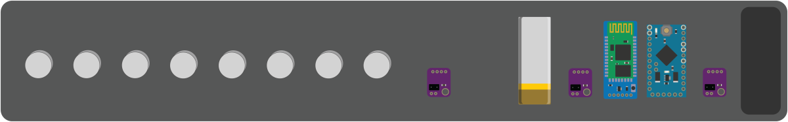

/
foresight

This project was worked on in collaboration with Ian Vernooy for the 2018 Senior Division GCRSEF. It received the Regeneron Health Award.
Countless devices have been created to help 4.2% of Americans who are legally blind to become more independent in their daily lives. Urban environments are notoriously hard to traverse and with about 80% of the visually impaired living in urban environments, it’s no wonder that many have trouble navigating. Some solutions to this problem have been created like the probing cane, service animals and camera based obstacle avoidance systems. Though these can prevent collisions with nearby objects, they provide no feedback in the way of walking directions. The ones that do perform this task are usually audio based and read directions into the ear. They do not provide very accurate turn information, but instead provide general directions like left and right.
We created a device that aims to solve these problems. The device is a wearable array vibration motors that are used to communicate navigation and obstacle avoidance information to the user. It uses a set of 3 time of flight laser range sensors to determine the proximity of nearby obstacles to the user. These sensors trigger a corresponding vibration motor on the ankle band to let the user know what direction they are approaching the obstacle. Additionally, the device can pair via Bluetooth to a phone to help with urban navigation. Using the Google Maps Navigation API, the device haptically “taps” the users ankle in the direction they need to turn in order to continue on their route.